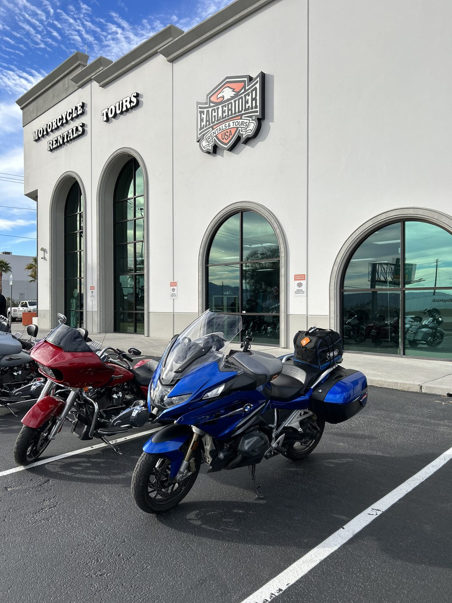
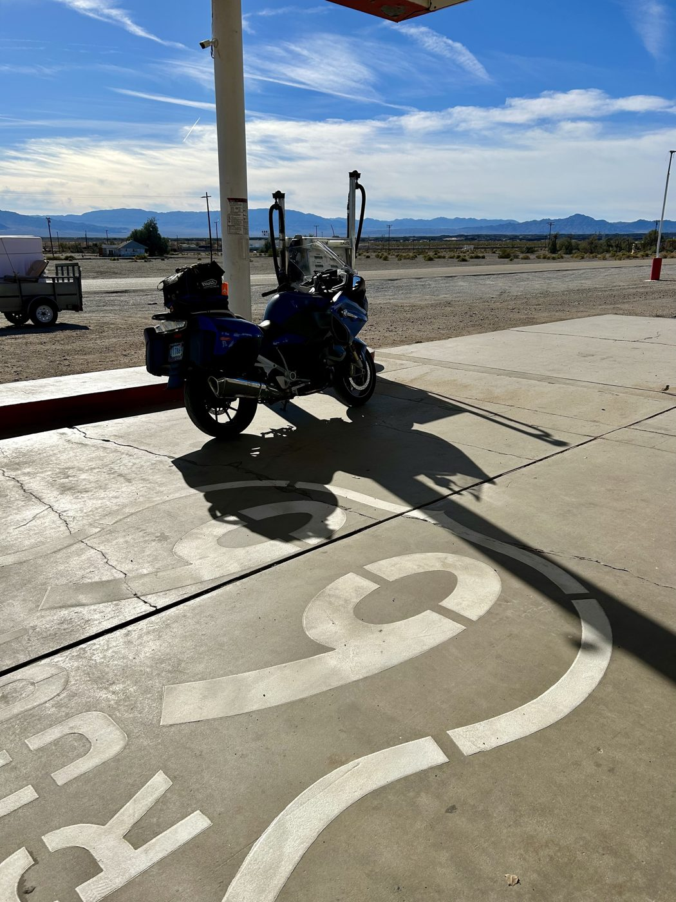
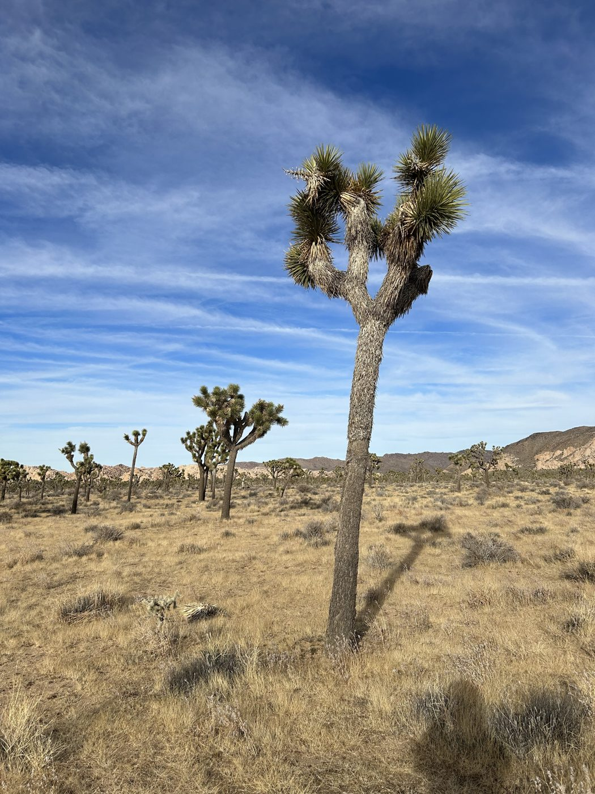
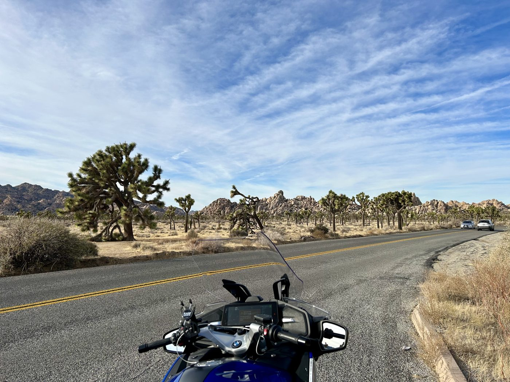
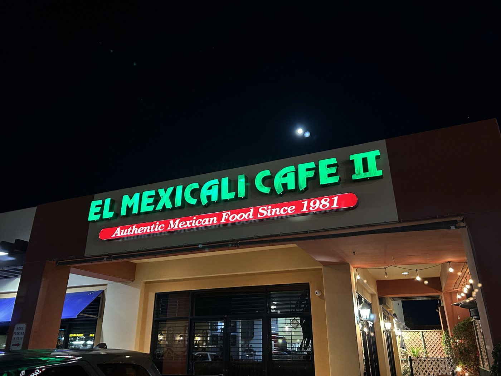
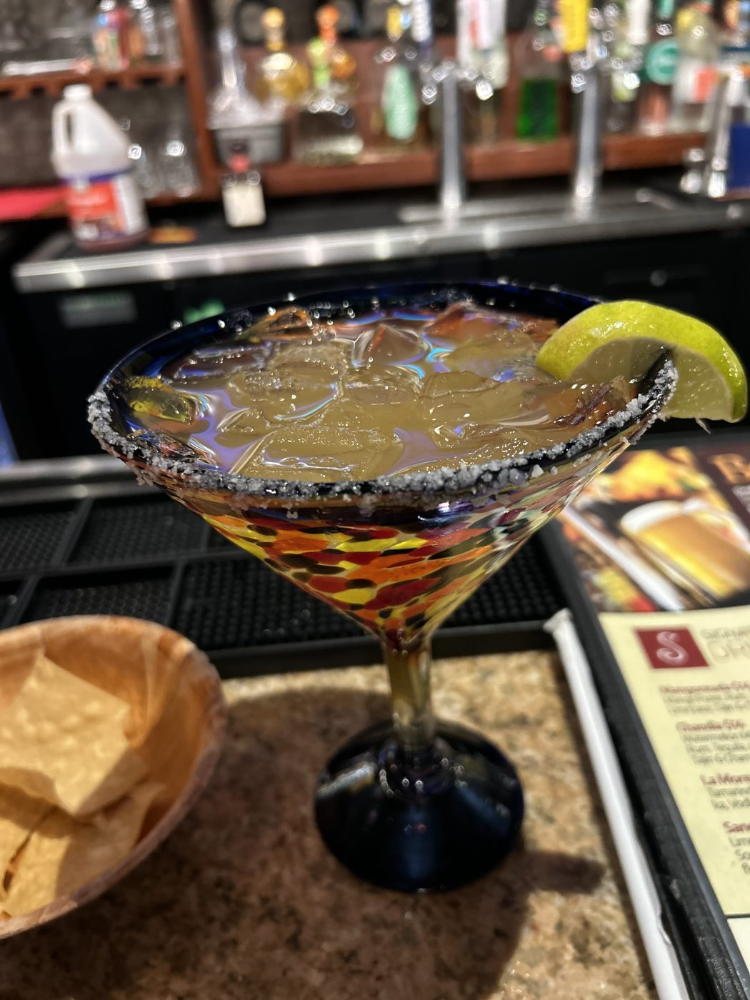

Day 1 · Tue, Dec 26
Las Vegas, NV Indio, CA
~264 mi
Las Vegas → Primm44 mi · 41 min
Primm → Amboy91 mi · 1 hr 32 min
Amboy → Joshua Tree64 mi · 1 hr 6 min
Breakfast at Primm & Proper inside the Primm Valley Resort & Casino. The avocado toast, with poached egg, tomatoes and wild greens on country-grilled bread, is hard to beat.
No trip through the Mojave is complete without Roy’s Motel & Cafe in Amboy. The 1940s diner no longer serves hot food, but there’s Route 66 Root Beer and snacks to hold you until Joshua Tree. The pumps work, at some of the highest gas prices on Route 66.
At the gateway to Joshua Tree National Park, the Joshua Tree Saloon does food, beer on tap and live music.
Must do: Hike Hidden Valley, an easy one-mile loop among the rock walls, with succulents and wildflowers in late winter and spring.
Must see: Keys View, over 5,000 feet up, looks across the Coachella Valley to Palm Springs, Indio and the San Andreas Fault, and on a clear day to Signal Mountain in Mexico.






Along the way
- Primm & Proper
- Seven Magic Mountains
- Roy’s Motel & Cafe, Amboy
- Mojave National Preserve
- Amboy Crater
- Joshua Tree Saloon
Overnight
Hampton Inn, Indio